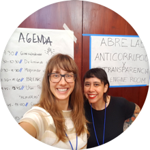
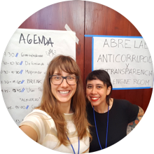

Who We Are
As a support organisation, our work centres on our partners and their needs. We combine knowledge of cultural and social nuances, expertise on technology and data, and learnings drawn from diverse sectors and use them to tackle real-world challenges.
Over the years we have refined and defined a spectrum of support formats that range from quick and targeted support, to longer-term research and partnerships. This year, we formalised the support we offer to partners, which you can read about in our What We Do guide. Each stream of work has its own dynamic workflow, has grown organically and pragmatically, and continues to evolve.


 
